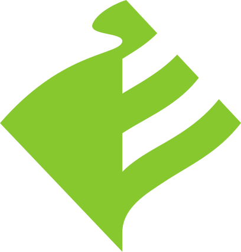

Dark · inverse
Brand · lime
Design System · Brand
음성·필기·영상 — 세 가지 인텔리전스로 산업과 일상을 연결하는 엔터프라이즈 AI 회사. 공식 CI 로고를 표준 자산으로 사용합니다.
Logo lockup — official CI
Symbol mark — standalone usage

Light · primaryConstruction & clear-space
x) 이상.selvas-logo.svg (slate #384F5E + lime).selvas-logo-dark.svg (white + lime).selvas-logo-white.svg (모노 화이트).Three intelligences
자연스러운 한국어 음성 합성, 실시간 음성 인식, 화자 분리 — 모든 음성 워크플로의 토대.
의료, 교육, 행정 분야의 손글씨를 정형 데이터로 변환하는 OCR과 필기 학습 엔진.
의료 영상과 산업 비전 데이터를 분석하는 비전 모델 — 진단과 검사를 가속한다.
Voice & tone
· 정보를 그룹으로 묶고 위계로 보여준다.
· 짧고 분명한 한국어 — 명사형 종결도 환영.
· 숫자는 의미가 있을 때만, 단위와 함께.
· English UI uses sentence case; product names stay in their native script.
· 화려한 그라데이션이나 장식적인 그림자.
· 라임색·슬레이트 외 새로운 브랜드 컬러를 즉흥적으로 도입.
· 의미 없는 통계 ("99.9%") 나 빈 강조어로 슬라이드를 채우기.
· Mixing fonts mid-sentence — let Pretendard render both Hangul and Latin.
Logo misuse
Brand color recipe